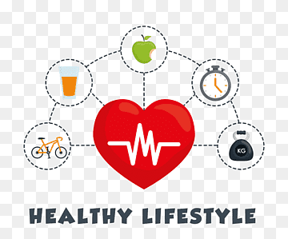

Örnek Düz Yazı Çalışması
Hayat bazen çok zor olabilir, ama ne olursa olsun ilerlemek önemlidir. Her gün yeni fırsatlar ve engellerle karşılaşırız. Bu yüzden her durumda pozitif kalmaya çalışmalıyız.

İnsanlar zaman zaman zor kararlar almak zorunda kalabilir. Bu kararlar, yaşamımızda büyük değişikliklere yol açabilir. Ancak, doğru kararları verebilmek için iç sesimizi dinlemeliyiz.

Günümüzde teknoloji her alanda büyük bir gelişim göstermektedir. Bu gelişmeler, hayatımızı kolaylaştırmakla kalmaz, aynı zamanda iş dünyasında da büyük değişimlere neden olmaktadır.

Çalışmak insanın hem zihinsel hem de fiziksel sağlığını etkileyebilir. Her gün yaptığımız işler, bizlere hem keyif hem de stres verebilir. Bu yüzden iş hayatında dengeyi kurmak çok önemlidir.

Sağlık her şeyden önce gelir. İyi bir yaşam sürmek için bedenimizi ve ruhumuzu iyi bir şekilde beslemeliyiz. Düzenli egzersiz yapmak ve sağlıklı beslenmek, hayat kalitemizi artırır.
Yapmak istediğimiz şeyler, hayatımızı anlamlı kılar. Hedefler belirlemek, bizi motive eder ve her gün bir adım daha ileriye gitmemizi sağlar. Ama unutmayalım ki, yolculukta önemli olan varılacak yer değil, o yolda geçirilen zamandır.

Kitaplar insanın zihinsel gelişimi için çok önemlidir. Kitap okumak, bizi farklı dünyalarla tanıştırır ve hayal gücümüzü geliştirir. Aynı zamanda bilgi birikimimizi de artırır.

Seyahat etmek, farklı kültürleri keşfetmek ve yeni yerler görmek insana büyük bir mutluluk verir. Seyahat sayesinde hem dinleniriz hem de dünyayı daha iyi anlarız.

Aile insan hayatının en değerli varlıklarıdır. Ailemiz, bize her zaman destek olur ve zor zamanlarımızda yanımızda bulunur. Onlarla vakit geçirmek, hayatta en değerli şeydir.

Mutluluk çok basit şeylerde bulunabilir. Gülerken, arkadaşlarınızla vakit geçirirken veya yalnızca güneşin batışını izlerken mutluluğu hissedebilirsiniz. Önemli olan anın kıymetini bilmektir.